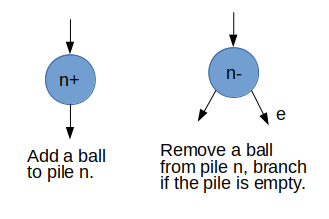
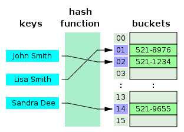
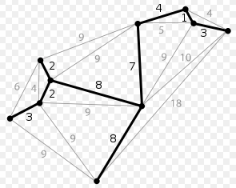
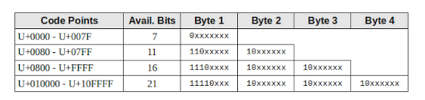
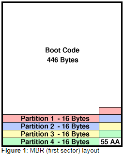
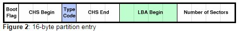

Computer Science
Links
Videos
- Lambda Calculus
- The structure and interpretation of computer programs
- Codierungstheorie (TIMMS)
- Uncle Bob - Clean Code
Books
Computation
TODO Abacus Machine
The Abacus Machine, also called Lambek machine, is the most simple Register Machine.
We have an infinite number of piles (registers 0,1,2,…) that can be filled with an infinite number of balls.
There are two operations:
- add a ball to pile n
- remove a ball from pile n (branch if not possible)
Very important is the conditional branching, that is done by switching the execution path when trying to remove a ball from an empty pile.
So, that is it!

This fictional machine can be programmed graphically by combining operations with arrows. Imagine this programs written on a piece of paper and handed to a little man carrying out the operations.
[insert a program example here]
Assembler style alternative description using a 2 element instruction set where also the next instruction is specified:
{INC(reg, n), DECJZ(reg, n, nz)}
Each instruction also has a number to identify it. Online version from Dennett: http://proto.atech.tufts.edu/RodRego/
A program would look like this:
# Calculate m+n # Init: reg 0 = m, reg 1 = n 1 DECJZ(0, 2, 3) # empty register 0 into register 1 2 INC(1, 1) 3 # end of program
How do we change the program or start another program?
Up to now the program was not stored in the machine. It was written on a piece of paper (external storage).
To get closer to a real computer, we should also store the program in some registers. That requires the instructions to be coded with a number of balls.
Computer anders erklärt
Idee: Erkläre wie ein Computer funktioniert (inklusive Internet, etc.) indem du eine Analogie verwendest in der nur einfach nachvollziehbare Handlungen von fiktiven Personen verwendet werden.
CPU: Mathematiker der Kugeln in Behälter legt bzw. herausnehmen. Bildschirm: Maler Postboten Festplatte: Lager Speicher: ?
Source Code: Programm:
Betriebssystem:
Bootvorgang:? Main Loop
Formal Languages
A language is a set of words. A word is a sequence of symbols.
The word problem
Decide if a word w belongs to a language L.
Certain types of languages are related to certain types of automata. Those fictional machines solve the word problem by accepting a given word. To do that the word will be read symbol for symbol, after the last symbol it should be decided if the word is accepted.
Regular Languages
Finite state machines or finite automata or state machines can be in one of finitely many states. States change in response to some input. They can be either deterministic (DFA) or non deterministic (NFA).
- DFAs and NFAs (and Type-3 Grammars) describe the same class of languages.
- Every NFA can be transformed into an DFA.
- A regular language will be accepted by a finite automaton.
- Every finite language is regular.
Deterministic Finite Automata (DFA)
- State transitions are determined by current state and input.
- An input is required for a state transition.
Formal: set of states, alphabet, transition function, start state, accept states
- after a state change the past is lost
- only remembers the current state (one state RAM)
Nondeterministic Finite Automata (NFA)
Does not need to obey the DFA - restrictions.
In particular the transition function is different. It can assign multiple states to a state/input pair.
Regular Expressions
Instead of specifying a regular language with an automata we can also use Regular Expressions.
Moore and Mealy Machines
Finite Automata that have in addition outputs, i.e. an output function and an output alphabet.
- Mealy Automaton: output determined by state AND input (usually fewer states).
- Moore Automaton: output determined by state alone.
Semantics
How to calculate the "meaning" of well formed strings?
Programming languages are made up of strings (a Program might be interpreted as one long string) which can be broken up into expressions. Semantics is concerned with giving a well defined meaning to these expressions.
E.g. every expression (that is a syntactic entity) results in a value. The question of semantics is now, how to calculate this value.
Operational Semantics
The meaning of the expressions of a Programming Language are the computational steps needed to execute the program. Those might be states of an abstract machine or the resulting values when evaluating expressions.
E.g. use lambda calculus to define the semantics of Lisp.
Small-Step Semantics - iterative Reduce expressions until a final value is reached. The semantics is described by the reduction rules.
We can think of this reduction process as a virtual machine that runs in a loop until no more reductions can be performed.
- Big-Step Semantics - recursive
Denotational Semantics
Expressions of a Programming Language mean denotations. Usually those meanings will be mathematical objects.
Algorithms
- Greedy Algorithms
- Matroid Theory
Interesting Algorithms
List: https://en.wikipedia.org/wiki/List_of_algorithms
Mathematics
- Strassen Algorithm (Matrix Multiplication)
Sorting
- Quick Sort
Graphs
- Dijkstra (Shortest Path)
Backtracking
Find a solution by trial and error. Typically useful for problems which defer an analytic solution (e.g. Sudoku).
Dynamic Programming
Example: Fibonacci Sequence
Break down a problem into simpler sub-problems and solve them recursively. Usually the sub-problems overlap, so it is useful to reuse already calculated solutions to sub-problems.
Memoization
Category Theory
Notes:1
- A category consists of objects and arrows (morphisms) between them.
- Arrows can be composed and the composition is associative.
- Every object has an identity arrow.
Category theory is about composing arrows.
- The target object of one arrow must be the same as the source object of the next arrow. The two ends must fit for the composition to work.
function composition: \(f\circ g\) (<- from right to left, read f after g !)
Composition in C++:
B f(A a); // f takes argument of type A and returns B C g(B b); // composition C f_o_g(A a) { return g(f(a); }
Two important properties for composition in any category:
- Associativity (no parentheses needed)
Identity For every object there is a unit arrow, pointing to itself. The identity function.
template<class T> T id(T x){return x;}
General Topics
Data Structures and Algorithms
The very basic distinctions we can make lead to the following datatypes:
| not ordered | ordered | |
|---|---|---|
| no repetition | set | ordered set (oset) |
| repetition | multiset (mset) | list |
Fundamental Structures
- trees
- lists
- graphs
Fundamental Relations
- dependency
- equivalency
- inheritance
- abstraction
Hash Tables
Telephone numbers stored in a hash table.

Principle idea
The hash table index will be calculated with a function. The input argument is the key of the element we're dealing with.
Collisions might be handled in two principle ways:
- Open Hashing
No limit, colliding elements will be chained with a linked list. - Closed Hashing
The number of elements that can be inserted is limited to the size of the hash table, so the hash function output has to be limited to this number (e.g. with a modulo operation). When there is a collision, the table index will be recalculated until a free position is found. The important thing is to choose the table size as a prime number of the form: \(m = 4 \cdot i + 3\). That guarantees all array indexes will be hit.- The drawback of this method is that it's performance declines exponentially when the table is fuller than ~70%.
- Another problem occurs when elements are deleted. In this case the cell has to be
marked
deletedin order to indicate a possible need of rehashing. Over all the key domain has to provide two special values:emptyanddeleted.
Time complexity
| Average | Worst case | |
|---|---|---|
| Search | O(1) | O(n) |
| Insert | O(1) | O(n) |
| Delete | O(1) | O(n) |
Double Hashing
A second hash function is used. Table size has to be chosen \(m = 4 \cdot i + 3\) in order to guarantee that all indexes are taken into account.
primary hash function- \(h(k) = k \cdot mod \cdot m\)
secondary hash function- \(h'(k) = k\cdot mod\cdot (m - 2) + 1\)
rehash function- \(h_j(k) = (h(k) + j \cdot h'(k))\cdot mod\cdot m\)
Finding values:
Calculate \(h(k)\) and compare the entry, if it doesn't match use \(h_j(k)\) until a match is found.
List
Tree
Graph
Spanning Trees
(aufgespannter Baum) Teilgraph eines ungerichteten Baums. Enthält alle Konten des Baums.
Relevant für Netzwerkprotokolle (Spanning Tree Protocol STP, loop free topology for Ethernets).

Fundamental Structures of Algorithms
Smallest unit: instruction
- what can be represented with a Flow Chart
- Sequence of instructions
- Sequence with branching
- Loops
- Recursion
- Sequence
Function calls
fun_1(); -> fun_1.1(); -> fun_1.1.1(); -> fun_1.2(); fun_2(); fun_3();
- Evaluation A Program evaluates until no more evaluation is possible.
Function call nesting and evaluation are very similar.
DLLs
Due to different naming decoration schemes that are used by different compilers, the exported C++ class can only be used by the same compiler and by the same version of the compiler. Both the DLL and the client code must be compiled with the same version of MS Visual C++ in order to ensure that the naming decoration scheme matches between the caller and the callee.
In order to export a C++ class successfully, a developer is required to export all the relevant base classes and all the classes that are used for the definition of the data members. This snowball exporting requirement is a significant drawback.
Better: Abstract Interface compiler independent clean interface All that is required to do is to provide a header file with an interface declaration and implement a factory function that will return the newly created object instances.
Doxygen
Way of Working
Write description (of a class etc.) in a different location?
- Create a Source.dox - file (same name as .h)
- Create a new Page: \page page_name Title
created Graphs
Colors
red arrow: private inheritance blue arrow: public inheritance
yellow arrow: template instanciation red box: not all arrows shown (?)
Setting up Doxygen (incl. Graphviz)
- Start Doxygen Wizard
Wizard Tab:
- Specify Paths on Wizard Tab
- Select "Use dot tool from GraphViz package" in Topic:Diagrams
- Select "All Entities" in Topic:Mode
Expert Tab: (Topics:Dot)
- select "CLASS_DIAGRAMS"
- select "UML_LOOK"
- select "TEMPLATE_RELATIONS"
- set "DOT_PATH" : C:/Program Files (x86)/Graphviz2.38/bin
Run Tab:
- Select Path again if Button "Run doxygen" is not active
- Run doxygen
Useful Commands
\brief /** \brief Brief description.
- Brief description continued.
- A blank line starts a new paragraph.
- Detailed description starts here.
*/
- \details
- \link \endlink
- \code \endcode
- \param ** \param[out] dest The memory area to copy to. \param[in] src The memory area to copy from. \param[in] n The number of bytes to copy * void memcpy(void *dest, const void *src, size_t n);
- \return
- ℑ ℑ html application.jpg "Caption" width=10cm
Markdown Syntax
Lists
-, + unordered 1 ordered
Tables
| Right | Center | Left |
| -—: | :-—: | :---- |
| 10 | 10 | 10 |
| 1000 | 1000 | 1000 |
Horizontal Rulers
—
Block quotes
> This is a block > quote over multiple lines
HTML
Many HTML commands work.
- Linebreak <BR>
- Links <a href="url" target="_blank"> Text shown</a>
Markup
- <CENTER> </CENTER>
- bold text
- horizontal ruler
- italic text
Tricks
Code Extract * \code{.cpp}/*Code Extract [no TAB here] code in between will be included ** \endcode *
INLINE_SOURCES
Topics->Source Browser
Duck Typing
Duck Test: If it walks like a duck and talks like a duck it must be a duck.
Rather than checking the suitability of an object (for a certain purpose) by checking it's type, the presence of certain methods and properties is checked.
How does that look in real life?
- In
C++you can only pass an object of a fixed type to a function, let's sayduck. When you want your function to handle different types you need inheritance or templates. - In
Pythonyou could pass anything. In the function you just operate on the object and hope for the best. It will be a good enough duck if nothing goes wrong.
Type Erasure
Type Erasure is a technique to represent a variety of concrete types through a single generic interface.
In C++ this has something to do with templates.
- internally it's ad hoc dynamic polymorphism
Examples:
std::function,std::anyLet's take
std::functionas an example.
std::function can be
- function
- function object
- lambda
- result of
std::bind(also a function object)
Implementation:
- Template constructor + virtual methods
Note:
- In Java types are erased by replacing the T's in a generic method with
Object.
Error and Exception Handling
Kinds of errors:
- Errors we care about that need to be fixed. The error handling should help us to efficiently find and fix the error. To be able to fix a bug usually it has to be reproducible. So the error handling should give us information on how to reproduce the error.
- Errors we don't care about. Error handling prevent the program from crashing.
- Critical errors that have to crash the program.
Examples of errors:
- division by zero
- port open not working due to hardware problem
So whats error handling good for?
- Prevent program from crashing.
- Help efficiently find and fix a bug.
What is exception handling good for?
- see above
- Help the user to correctly implement code.
Returning error codes:
- Using return values for error handling can only report one value to the caller.
- If the function needs to have a return value you need an extra parameter.
- Constructors don't have a return value.
- It's not possible to "collect" multiple errors easily.
- Returning error codes is part of the "normal" flow of code.
- Can lead to "Many Error Message Boxes" - problem.
Exceptions:
- Decouple normal flow of code from handling of errors.
- When the exception is caught no more errors pop up.
Problems:
- leaving the normal program flow can also cause problems, if things are not properly cleaned up -> therefore use finally blocks for cleanup code
Event Loop
Message Loop, Main Loop
An event loop collects messages from message generators and dispatches them to message receivers. So the basic logic can be captured by the following code snippet:
while(1)
{
getMessages();
dispatchMessages();
}
Of course in the real world things are happening in parallel.
Floating Point Numbers
Representation of rational numbers in the form: \(s \cdot m \cdot 2^e\) (Sign Exponent Mantissa)
Storage Layout
| Sign | Exponent | Fraction of Mantissa 1.x | decimal places | |
|---|---|---|---|---|
| Single Precision (32 bits) | 1 bit (- = 1) | 8 bits (-126…127) | 23 bits | max. 7 |
| Double Precision (64 bits) | 1 bit (- = 1) | 11 bits (-1024…1024) | 52 bits | max. 17 |
Stored in normalized form
- The mantissa is 1.xxx where only the fraction is stored.
- The leading 1 is not stored. The bits from left to right represent: \(2^{-1} + 2^{-2} + 2^{-3} \cdot \cdot \cdot + 2^{-23}\)
- Exponent bits
Examples:
| S | Exponent | Mantissa | Floating Point | Decimal | ||
|---|---|---|---|---|---|---|
| 0 | 00000000 |
0 | 00000000000000000000000 |
0 | Exception | +0 |
| 1 | 00000000 |
0 | 00000000000000000000000 |
0 | Exception | -0 |
| 1 | 00000001 |
-126 | 00000000000000000000000 |
1.0 | \(-1.0 \cdot 2^{-126}\) | 1.17549435E-38 |
| 0 | 01111111 |
0 | 10000000000000000000000 |
1.5 | \(1.5 \cdot 2^{0}\) | 1.5 |
| 0 | 10000000 |
1 | 11000000000000000000000 |
1.75 | \(1.0 \cdot 2^1\) | 3.5 |
| 0 | 11111110 |
127 | 11111111111111111111111 |
1.99… | \(1.99... \cdot 2{^127}\) | 3.4028235E38 |
| 0 | 11111111 |
127 | 00000000000000000000000 |
Infinity | ||
| 0 | 11111111 |
127 | 00100000000000000000000 |
NaN | ||
| 1 | 11111111 |
127 | 00100000000000000000000 |
NaN |
Special Values
- Zero: E=0, F=0 (-0, +0 are distinct)
- Infinity: E=255, F=0
- Not A Number (NAN): E=255, F: not all 0s (-NAN, +NAN are not different)
Good and bad programming
"using namespace" is evil !
using namespace foo; using namespace bar;
Everything works fine, you can call Blah() from foo and Quux() from bar without problems. But one day you upgrade to a new version of foo 2.0, which now offers a function called Quux(). Now you've got a conflict: Both foo 2.0 and Bar import Quux() into your global namespace. This is going to take some effort to fix, especially if the function parameters happen to match.
If you have used foo::Blah() and bar::Quux() then the introduction of foo::Quux() would have been a non-event.
Vorsicht mit Loops, die als Grenzen Variablen haben, die sich in der Schleife ändern
e.g. for(i=0, i<tab_nr.size(), i++){tab_nr.push_back();}
Including Headers & Forward Declaration Dependency_Hell
Problem: more than one file. It becomes increasingly tedious to have to forward declare every function you want to use that lives in a different file. The purpose of a header file is to hold declarations for other files to use. Instead of forward declaring EVERY fct. that you want to use, you just write e.g. #include <iostream>.
When we use the line #include <iostream>, we’re requesting that all of the content from the header file named “iostream” be copied into the including file.
Each .cpp file is processed seperatly, i.e. .cpp files don't share the same #define's. An include guard does only prevent the same .cpp file from including a header multiple times.
Include Strategy
A header file contains the external declarations for a library. The content of the .h file is included at the position of the #include statement.
- Include in cpp-files what is only needed for that cpp-file. This is to avoid including everything in all the files that include the .h file. The .h file should only contain what is needed for the external world.
- Use forward declaration to reduce the nr. of includes. ??
- go from local to global
- h file corresponding to this cpp file (if applicable)
- headers from the same component,
- headers from other components,
- system headers.
cyclic includes: Forward Declaration (incomplete type)
Can only be used to declare pointers or references (no members of the incomplete type!).
Problem: java_debugger.h includes VMThread.h AND VMThread.h includes java_debugger.h
Use e.g. class TJavaDebugger; in VMThread.h to declare the used class.
Example: --------------–— java_source_frame.h ---------------–—
class TBreakpointDate; // forward decl. typedef struct { TBreakpointData *Breakpoint;
}DebugObjects;
class TJavaSourceFrame { std::vector<DebugObjects> DebugLineObjects; };
class TJavaTab { TJavaSourceFrame b; };
-------------–— MiscFunc.h ------------------------–— class TClassData { TJavaTab *Tab; };
class TBreakpointData;
Strategy in case of error
- Search project wide for the problem include header. Where is it first included?
- check "Full parser context", Which cpp file is generating the problem?
- search for "#pragma hderstop"
- check project include paths
Why Setters and Getters are good
Idea: There is ONE place where a member is assigned:
mem = whatever;
- Good for debugging because you can set a breakpoint on the assignment line. Otherwise you might have 100 places where the value is changed and you might have to check every one of them.
- Getters and Setters can have different access levels (public, private).
- Functionality can be added/changed later. Getters and Setter can be overwritten in derived classes.
- You might wanna add range checks in the setter.
How to design a recursive Algorithm?
Recursive calles will form a tree structure. Solve a smaller instance of the same problem until you reach the simplest case.
- small cases smallest case is the terminating case
- draw a recursion tree
- what are the parameters
Examples for recursion
- quicksort
- factorial
- regular expression matcher
- tree walk
Serialize Classes
"reversible deconstruction of an arbitrary set of C++ data structures to a sequence of bytes" (boost) works like:
archive << data; data >> archive;
When <<, >> are invoked for class data, serialize() is called. central concept: Archive: this is the byte sequence.
serialize() is used for store and load, the "&"-operator does automatically the right thing (<< or >>).
Notes:
each member object has to be made serializable this can also be done from outside the class
// make UnicodeString serializable BOOST_SERIALIZATION_SPLIT_FREE(UnicodeString) namespace boost { namespace serialization { template <typename Archive> void save(Archive &archive, const UnicodeString &u_str, unsigned int version) { std::string str; str = UnicodeString2StdString(u_str); archive & str; } template <typename Archive> void load(Archive &archive, UnicodeString &u_str, unsigned int version) { std::wstring str; archive & str; if (str.empty()) u_str = ""; else u_str = str.c_str(); } } }
- you can also split save & load if they have to differ
Fluent API
not Flow API
Call sequences that look something like a sentence.
Example: MoveAllBreakpoints().In(file).After(position).To(new_position)
How to do that? MoveAllBreakpoints() returns obj with method In() In() returns obj with method After() etc.
File Names are not so easy to compare
When are two paths identical?
- VCL: ExpandUNCFileName()
- WinAOI: GetFullPathName()
Stabile robust Programming
What you don't want? (but often enough happens)
- little change in Part A -> desasterous consequences in Part Z the error should be where the change was (local)
- little change in Part A -> have to change Part B, C, D, …
to be continuied…
Rules
All of this is of course to be taken with a grain of salt.
- Unity: What is ONE should be (syntactically) visible as ONE. e.g. a parameter list
- The ideal function has no parameters.
- Good code has no branches. (see Arrow Anti Pattern) Replace branching with polymorphic function calls.
- Don't return
null.
Complexity of source code
- At most one class per source file.
- At most 10 public method per class.
- At most 10 private method per class.
- At most 100 lines per method.
So a source file that is more than 2000 lines is probably too large and starting to be too messy.
Global Variables
Interfaces, Functions have Interfaces
Who is supposed to change global variables?
It seems clear enough to me, that not everybody should. So who?
main()- a special master object (method)
Should everybody be able to read global variables? Also that obscures things.
Memory Model
How does a compiler put code into memory? Stack, Heap, Code, global Variables
Networks
- connection oriented
- connectionless
Network Sockets
Ein im Arbeitsspeicher eines Computers reservierter Bereich, der als Kommunikationsendpunkt dient. Ein Computerprogramm fordert einen Socket vom Betriebssystem an.
Sockets may communicate within a process, between processes on the same machine, or between processes on different continents. The connection is uniquely identified by an IP-address and a PORT-number (plus protocol TCP or UDP)
Socket functions:
- socket() Create a new communication endpoint.
- bind() Attach a local address to a socket.
- accept()
- listen() Announce willingness to accept connections.
- connect()
- send()
- receive()
- close()
ServerSocket serverSocket = new ServerSocket(port); //Serversocket mit Port-Nummer while(true) { Socket clientSocket = serverSocket.accept(); //auf Anfragen warten InputStream input = clientSocket.getInputStream(); //InputStream-Objekt öffnen byte[] data = new byte[1024]; //Datenpuffer deklarieren (anlegen) int numBytes = 0; //Variable für Zahl gelesener Bytes numBytes = input.read(data); //Daten lesen /*** gelesene Daten verarbeiten ***/ clientSocket.close(); //Verbindung schließen }
There are two types of sockets:
- Stream sockets (TCP)
- Datagram sockets (UDP)
Glossary
- INET (Internet)
- IPC (Inter Process Communication)
- STREAM
- blocking, non-blocking
- Client sockets (e.g. web browser)
- Server sockets (e.g. web server)
Paradigms
- Structured Programming (1972)
gotois evil (Dijkstra 1968)
- Imperative Programming
- Logical Programming
- Declarative Programming
- OOP
- Functional Programming
- Generic Programming
- Metaprogramming
Structured Programming
Famous Book:(Dahl, Dijkstra, and Hoare 1972)
The fundamental structures are:
- Sequences (block)
- If else (selection)
- Loops (repetition)
- Subroutines
Programs are composed of those structures. The resulting structure can be visualized with flow charts or Nassi Shneiderman diagrams (NS diagrms).
Those are the usual control structures in programming languages.
Regular Expressions
General Comments
REs have no memory, they can be implemented with finite state automata (FSA). This is why e.g. detecting nested structures cannot be done with REs. E.g. to check for closing brackets ((())) you need to remember how many brackets have been opened.
Breaking lines apart
If all lines in a string have the same structure, they can be broken apart with a regular expression like this:
(^.*);<ListItem>(\w*),?(<Type>(\w*))?,?(abstract)?,?(interface)?,?(static)?,?(final)?,?(native)?,?(volatile)?,?(transient)?
Example line:
java.io.Writer.flush();<ListItem>method,<Type>void,abstract,static,final,native,volatile,transient
The different parts of the line structure can be referred to with: $1, $2, … $n. For optional parts ()? $i is simply empty.
With this method all lines of a string can be processed simultaneously.
Limits: (especially compared to linewise processing
The parts can not be processed conditionally. You cannot do somthing like If $1=="class" then do this and that. Embarcadero: A match evaluator can be used:
System::UnicodeString __fastcall TForm1::ReplaceCC(const TMatch &Match) { i = i + 1; return IntToStr(i); } TMatchEvaluator myEval = &ReplaceCC; regex->Replace(input, myEval);
Unicode
UTF 8
- variable length, up to 4 bytes
- Unicode 0..127 same as ASCII
Unicode > 127: 2-4 byte
110xxxxx 10xxxxxx 1110xxxx 10xxxxxx 10xxxxxx 1111xxxx 10xxxxxx 10xxxxxx 10xxxxxx
The x-es are filled with the Unicode Bits from right to left. 
Example:
- Unicode Character: (€) 0x20AC in binary: 0010000010101100
- i.e. we need 16 bits (row 3): 1110xxxx 10xxxxxx 10xxxxxx
- move the Unicode binary data from the right: 11100010 10000010 10101100
- this is then the UTF8-code: 0xE2 0x82 0xAC
User Interfaces (GUI)
- Combine visually what logically belongs together.
- A good GUI should not need a manual. So it should be intuitive to use.
- Testing: Maybe you want a command line interface (CLI). Or do you prefer a GUI-Test-Framework.
- A graphical object should be represented by an object in the code. How easy is it to find?
Details you have to thing about:
- Tab Order
- Tooltips
- Font Sizes
- Window Resize
- Tabs & Spaces, Line Wraps
- Selections (e.g. Tree Views)
GUI Elements
- Slider
- Scroll Bar
- Button
- Radio Button
- Status Bar
- TextBox
- ListBox
- StringGrid
- Docking, Drag & Drop
Organizing Code
- Modularize
- Reuse
- Integrate
Why?
- Locate Code
Software Test
- Unit Tests
- Integration Tests
- System Tests
- Acceptance Tests
Unit Test
A unit test usually contains:
- Before and After functions
- Test for logic and paths in a module
- Checks (e.g.
TEST_ASSERT_EQUAL_INT,TEST_ASSERT, etc.)
Frameworks
- Catch2 (C++)
- CppUTest
- Unity (http://www.throwtheswitch.org/unity)
- Google Test
- FFF (Fake Function Framework - https://github.com/meekrosoft/fff)
- gMock (Google Mock - https://github.com/google/googletest/tree/master/googlemock)
- pytest - https://docs.pytest.org/en/stable/
- shunit2 - https://github.com/kward/shunit2
Notes
- Testing firmware drivers and hardware is very different.
- Start Unit Testing after the low level stuff is stable.
Terminology
- Test Fixtures : Common code (e.g. set up objects etc.) for multiple test cases.
Properties
- Correct
- Readable
- Complete
- Demonstrative: show how to use the units API.
- Resilient: Maintainable.
Guidelines
- What's the most simple thing that could work?
- Start with tests for independent modules.
FFF (Fake Function Framework)
FAKE_VOID_FUNCFAKE_VALUE_FUNC
With this makros mockup functions are generated.
Google Test
Google Mock
- Derive Mock class from a virtual class.
shUnit2
You only need the script shunit2.
Simplest Example:
#! /bin/sh testEquality() { assertEquals 1 1 } # Load and run shUnit2. . ../shunit2
All tests have to start with test.
Standard functions:
oneTimeSetUponeTimeTearDownsetUp: Run before each test.tearDown: Run after each test.
Static Tests (Code Analysis)
Warnings
- Kontrollflussanalyse dead Code, unused variables unreachable code,
- Datenflussanalyse uninitialized variables
- Semantic Analysis
Dynamic Tests
Unit Tests
(Komponententest: 25% of errors found here)
Individually tests parts of a system. A unit is the smallest piece that can be tested in isolation, e.g. a function.
Integration Tests
Tests the combination of different modules, e.g. classes, typically things that are in one source code file.
System Tests
Black box / white box Tests
Regression Tests
After a change (e.g. bugfix) check if what already worked still works (otherwise it would be a regression).
Test Driven Development (TDD)
Advanced TDD - Oncle Bob
This shall be the discipline you follow.
3 laws of TDD:
- Do not write any production code without a failing test first.
- Write only enough test code as is sufficient enough to fail.
- Only implement a minimal code that makes the failing test pass.
Why?
- 1 min. ago, it worked!
- Your will write code that is testable. That will get you a decoupled system.
- You will start to trust the tests.
- Test cases are a good low level documentation.
- Reduce debug time.
The main reason is: We don't have to be afraid of change anymore! So you can clean it up.
Boy scout Rule: Check the code in cleaner than you checked it out.
Double Entry Bookkeeping: that's TDD, write it twice, say the same thing twice
Not every function must have a test. That would result in a coupling.
Don't let the AI write the tests. The tests define the behavior of your code. The AI will write a test that passes, it will replicate your errors.
Do you have to test a private function? No, you shouldn't have to. Test them through the public interface.
Triple A Rule: Arrange, Act, Assert Logical assertion: not physical assertions, we want to assert one action We want tests to be isolated.
Necessary vs. accidental complexity Test data must not be production data, but must communicate to the reader of the test.
Make tests faster by short circuiting slow parts of the system. Use composed assertions for better readability.
Stubbing and Mocking
Testing behavior vs. state.
mocks, spies, stubs, test doubles
test doubles are:
- mock->spy->stub->dummy
- fake
hierarchy test doubles
- dummy: does nothing, returns something close to null
- stub: dose nothing, returns specific values
- spy: stub, that remembers facts about method calls
- mock: spy, that knows how methods should be called
different test double
- fake: contains business rules
Chicago school: use stubs, the fct. is a black box, we only care about return values, testing state London school: use spies, we also care about what is called when, testing behavior
The TDD Uncertainty Principle: Fragility increases with certainty. Testing state leaves us uncertain.
Test Design
Robust, not fragile tests.
Decouple Tests and Application Code
- Use a testing API to isolate the tests.
How? (suppose we are testing a class)
- Dependencies always from tests to app code.
- Add test cases, extract functions into private functions, extract private functions into private functions, extract classes, etc.
- As the tests get more specific … the code gets more generic
- The application will grow into a network of classes. The test adds more and more cases, i.e. feature specs.
Test Patterns
- Test Specific Subclass: override methods you don't want to be called.
- Self Shunt: Derive form production code and create a test object for the test.
- Humble Object: where TDD breaks down, i.e. when you're close to the physical boundary of the computer (e.g. GUI - Screen, Socket, Disk Driver, etc.) Separate code close to the boundary (driver, should be dumb, so it doesn't have to be tested) from the rest.
Cases where TDD doesn't work well
- crossing physical boundary
- when you don't know the answer (e.g. CSS)
Alternative for TDD: test && commit || revert
Concurrency
Basics
Multiple activities happen at the same time.
3 basic problems 2:
- How to transfer information from one process to another.
- How to protect critical resources.
- How to ensure proper execution sequencing between different processes.
What kind or problems arise?
- Why can we not just use (atomic) flags?
- We need to be able to wait without wasting CPU time.
Non-blocking function calls trigger something (e.g. an I2C communication) that is not done when the function returns. So somehow we have to wait until this something is done.
Race Condition
Example
Lets say processes A and B increase a number in a shared file.
Lets say the current number in the file is 10.
- A reads the value and stores it in a local variable.
- Now A is halted and B continues executing.
- B reads the same value, increases it and stores the number 11 in the file.
- Now B is halted and A continues executing.
- A still having the number 10 in the local variable, will also write the number 11 to the file.
- The result is the counter in the file missed one increment.
Processes A and B are racing for a shared resource trying to change it at the same time. The order of the resource access is not deterministic.
Critical Sections
It should mean a section of code that is executed by different threads. The execution might happen at the same time.
Take care! There are multiple meanings around. It might mean a block of code or it might mean (Windows) some kind of mutex object. What's especially confusing are e.g. expressions like "entering THE critical section", when actually there are two or more code sections. What it really means is obtaining a lock.
Critical Section Objects(Windows)
A CSO can be owned by only one thread at a time. Don't get confused by the name, it can be used to synchronize DIFFERENT blocks (sections) of code! Think of it as: There are multiple critical sections that are synchronized via ONE CSO.
Note: Difference between Mutexes and CSs in Windows: Mutexes can be shared between processes while CSs can only be used to synchronize threads in one process.
Mutual exclusion (Mutex) 3
With critical resources we want to make sure that only one process can access the resource at a time. If process A is using the resource other processes are excluded from doint the same thing.
Also constructs that implement a mutual exclusion are called mutex.
Semantics:
lock |
unlock |
aquire |
release |
Notes:
- Mutex code is always of the form
lock - critical section - unlock(in contrast to a semaphore). - The mutex (in contrast to a semaphore) is owned by one process, who locks, executes the critical section, and unlocks the mutex, so locking and unlocking is done by the same process.
- Semaphores and Mutexes might have the same implementation. The difference is how they are used.
Mutexes have a process id queue to keep track of waiting processes.
Usage
- Synchronize access to shared resources.
Example
- Reading from and writing to a message queue.
- Guard access to a bus, i.e.
I2C,SPI,
Problems
- The problem with mutexes is that they can produce deadlocks.
Locks
A lock is a variable (could be a simple boolean flag) that locks a critical region. In order to do that it has 2 states (0, 1 or unlocked and locked).
A lock is an object that can only be owned by a single thread at any given time.
Semantics
aquire() |
release() |
busy waiting: continuously checking a flag in a loop (wasting CPU time)
A spin-lock is a lock that uses busy waiting.
Condition Variables
Purpose: Wait until another thread has finished something, a certain condition is met.
With a condition variable a process can block itself (calling wait()) and
wait for other processes to wake it up (signal()) when the awaited condition is
signaled.
A condition variable has no counter. If signal() is called with no one waiting, the
signal is lost.
Semantics: wait() / signal()
Monitors
Lock + condition variable
Semaphors 4
Semaphors (σήμα φέρειν - Zeichenträger) are not (unlike mutex) owned by a process. So any process can perform the take and give operations in any order.
Semaphors have a process id queue to keep track of waiting processes.
Semantics
increment |
decrement |
take |
give |
wait |
signal |
Usage
Semaphores can be used for two purposes:
- Signaling events between processes (typical).
- Access to multiple shared resources.
Examples
- A task or an interrupt signals another task that something should be done. Let's say a boss task signals a employee task to do some work. This might be done with a binary semaphore.
- Avoid having too much code in interrupt handlers by signaling the interrupt occurrence to a task using a semaphore.
Problems
Atomic variables
Deadlocks
Producer Consumer Problem
(also bounded-buffer problem)
Two processes share a common fixed-size buffer. The problem is filling in and taking out data happens at the same time.
The buffer can be in 3 conditions:
- empty
- full
- between empty and full
Filling in and taking out elements must not interfere.
When the buffer is full the producer can either wait or data is discarded.
Reentrancy & Thread Safety
A function is called reentrant if it can safely be interrupted and called again (re-entered). This happens either when the function is called from multiple threads, from an interrupt handler while being already executed or
This can be achieved by using only local data and avoiding any call to non-reentrant functions.
Examples
- A function setting up an external device (i.e. writing to it's registers) is non-reentrant.
A function is thread safe if you can call it from different threads no matter when.
Examples:
- Not thread safe because of the global variable t.
- Not reentrant because
my_funccould be called whileswapexecutes overriding t.
int t; void swap(int *x, int *y) { t = *x; *x = *y; // `my_func()` could be called here *y = t; } void my_func() { int x = 1, y = 2; swap(&x, &y); }
Rules:
- Don't use global or static variables.
- Don't call other non-reentrant functions.
Priority Inversion
A low priority task (L) indirectly via a medium priority task (M) interrupts a high priority task (H), practically inverting the priorities.
How does it happen?
Simple Form:
- L acquires access to a resource R.
- H attempts to acquire R, fails and becomes blocked.
This can be avoided when L gives up R in time before H starts running. But things become more complicated when task M comes along.
- M starts running while L holds R. So L cannot give up R blocking H indirectly.
Thread Pools
see Thread Pool
Analogies
- Airplane can't take off until all passengers are on board and flight controll give permission. Passengers won't board until a gate is open, flight control won't give permission until the runway is clear.
- swimming race
Java: Rooms and doors analogy
Threads are guests, only one of them is allowed in the room. The key to the room lies on the mat in front of the room. So one thread takes the key enters the room, does what he wants, leaves the room again and puts the key back on the mat.
The key is whats called a monitor in Java.
Dining philosophers problem
- Five philosophers sit at a round table with a plate of spaghetti in front of them.
- Between the plates there is one fork.
- The philosophers either think or eat.
- When they start to eat they try to acquire the left and right fork (yes it's strange!). If he successfully acquired two forks he starts to eat for a while.
Not a Solution
#define N 5 /* number of philosophers */ void philosopher(int i) /* i: philosopher number, from 0 to 4 */ { while (TRUE) { think(); /* philosopher is thinking */ take_fork(i); /* take left fork */ take_fork((i + 1) % N); /* take right fork; % is modulo operator */ eat(); /* yum-yum, spaghetti */ put_fork(i); /* put left fork back on the table */ put_fork((i + l) % N); /* put right fork back on the table */ } }
Readers and writers problem
Airline reservation system. Many competing processes are trying to read and write from and to a database. While one process is updating the database, no other should be accessing (write or read) it.
Sleeping barber problem
The Barber Shop has
- 1 barber
- 1 barber chair
- n chairs for waiting customers
When there are no customers the barber falls asleep. When a customer arrives he has to wake the barber. If customers come while the barber is serving a customer they either sit down or leave when no chairs are available.
Solution
#define CHAIRS 5 /* #.chairs for waiting customers */ typedef int semaphore; semaphore customers = 0; /* # of customers waiting for service */ semaphore barbers = 0; /* # of barbers waiting for customers */ semaphore mutex = 1; /* for mutual exclusion */ int waiting_customers = 0; /* customers are waiting (not being cut) */ void barber(void) { while (TRUE) { down(customers); /* go to sleep if # of customers is 0 */ down(mutex); /* acquire access to 'waiting' */ waiting_customers--; /* decrement count of waiting customers */ up(barbers); /* one barber is now ready to cut hair */ up(mutex); /* release 'waiting' */ cut_hair(); /* cut hair (outside critical region) */ } } void customer(void) { down(mutex); /* enter critical region */ if (waiting_customers < CHAIRS) /* if there are no free chairs, leave */ { waiting_customers++; /* increment count of waiting customers */ up(customers); /* wake up barber if necessary */ up(mutex); /* release access to 'waiting' */ down(barbers); /* go to sleep if # of free barbers is 0 */ get_haircut(); /* be seated and be serviced */ } else { up(mutex); /* shop is full; do not wait */ } }
Cigarette smokers problem 5
Assume a cigarette requires three ingredients to make and smoke: tobacco, paper, and matches. There are three smokers around a table, each of whom has an infinite supply of one of the three ingredients — one smoker has an infinite supply of tobacco, another has paper, and the third has matches.
An additional agent puts two supplies on the table. The smoker who has the third supply is supposed to take them, make a cigarette and smoke it. After that the agent puts another two supplies on the table and on it goes.
Windows
- event
- mutex
- semaphore
- critical section Can only be used in the same process.
Clean Code
Code Smells
Bloaters
- Long Method
- Long Parameter List
- Large Class
- Primitive Obsession - why is this here?
- Data Clumps
additional:
- deep nesting
- deep inheritance hierarchies
Object Oriented Abusers
- Switch Statements
- Alternative Classes with different Interfaces
- Refused Bequest
- Temporary Field
Change Preventers
- Shotgun Surgery: Single responsibility has been split up over many classes. So any change has to be deployed to many classes simultaneously.
- Parallel Inheritance Hierarchies
- Divergent Change
Couplers
- Middle Man
- Message Chains
- Incomplete Library Class
- Inappropriate Intimacy
- Feature Envy
Dispensables
- Comments
- Duplicated Code
- Data Class
- Dead Code
Naming Things
General principles
- Understandability
- Conciseness
- Consistency
- consistent use & formatting
- Distinguishability
- visually & phonetically distinquishable
Rules:
- Function names use verbs.
- If it returns a boolean use IsValid(), or HasElements(), etc.
- Use domain specific names (e..g "meetings" instead of "events").
- Use standard terminology, if it exists!
How abstract should it be? What about a controlled vocabulary? or a glossar?
Managing Complexity with Clean Code (O'Reilly)
Scott Ford
Introduction
- 0:03:03 Start
- Write Code for Humans Code is read much more often than written. The truth is in the code.
- Brain as code simulator (when reading code).
- 0:07:05 Clean Code: easy to
- read
- understand
- explain
- modify
- test
- 0:08:22 Complex Code
- multiple responsibilities
- hard to understand
- difficult to understand
- fear of change
- large nr. of tests
- Clean code can be complex
- 0:12:39 cat.c cat command example
- 0:14:46 Content of Course
Complexity
23:05:00 Identifying complexity
- Functions (content, interface)
- Classes (relations with other classes, internal structur)
- Packages, Namespaces
- Libraries (dependencies, release strategies, interface)
Complexity Metrics
00::28:00
- reduce to a number
- Friction: How difficult is it to work with something?
- e.g. 0..10 point scale
- Lines of Code (LOC)
- easy to compute
- Cyclomatic Complexity
- nr. of independent code paths in a block of code.
- works best on function level
- +1 for if or else if with simple condition, etc.
- 10 is high
- Cognitive Complexity
- high value for switch blocks
- considers nesting level
- e.g. Sonar Cloud
- ABC Complexity
- data-flow, flow-control
- Assignments
- Branches
- Conditionals
- Indentation Complexity
- nr. of indentations
50:06 survay
Architecture Complexity
62:40
- Coupling
- a calls b -> directly coupled
- Abstraction
- Cohesion: how are components grouped together
- dependency cyclesXS
Complexity Anti-Patterns
- Procedural 77:00
- spread out logic, goto statements
- large functions
- deep nesting
- Example: spaghetti 78:28
OOP 82:30
- deep inheritance hierarchies
dependency injection instead of extension
Controller(CommonBehaviour cb) vs Controller: public CommonBehaviour
- fighting polymorphism 86:21
- concrete implementation of a virtual method might be confusing, when changing references to base and derived class.
- Functional 90:00
- Too much composition f(g(h(m()))
- non-deterministic functions, don't always return the same value
- read file, network, random, …
- inject non-deterministic sources, test against deterministic data
Reducing Complexity
- 105:00 Process
- add automatic tests
- approval testing
Extract function
Software Development Principles
Why do we need them?
Because of the limitations of the programmer.
DRY Principle
Don't repeat yourself! DRY up your code!
KISS Principle
Keep it simple and stupid!
SOLID Principles
vs STUPID
- S Singleton
- T Tight Coupling
- U Untestability
- P Premature Optimization
- I Indescriptive Naming
- D Duplication
Single Responsibility Principle
An entity should have only ONE reason for change.
Whats an entity?
- function
- class
- module
- library
- application
What is a responsibilty? It's rather about how tightly parts are coupled. How easily can they be changed in isolation.
Orthogonality: Change one part without worrying about the rest. Is it possible to divide a part without increasing coupling?
Each class should be built to accomplish a single task. Either
- storage or manipulation of data
- coordination of subclasses
Open/Closed Principle
An entity should be open for extension, but closed for modification.
How is extension done?
- Inheritance
- Composition
Liskov Substitution Principle
Dogs are Animals. So it should be possible to substitute Animal objects with Dog objects.
More general (OOP context)
If a program uses objects of type T then it should also work correctly with objects of type S, when S is derived from T.
Circle-Ellipse-Problem
- Circle "isA" Ellipse Relation. So a Circle class could inherit methods like:
scaleX(),scaleY(). That's a problem because the Circle class shouldn't have those methods. - The LSP is violated in this case: What works for the base class doesn't work for the derived class.
Interface Segregation Principle
A client should not be forced to depend on methods it doesnt use.
Dependency Inversion Principle
High level modules should not depend on low level modules. The lower level modules contain more specific code implementing more specific features. These lower level features are used by the higher level modules.
What is the problem?
We want to avoid that a change in a lower level Module leads to changes in
(or crashes) the higher level modules.
How to achieve decoupling?
Typically abstaction layers are build upon lower level layers.
To decouple them put an abstract interface between them. The dependency is
inverted because the interface definition is part of the higher level. In
other words the higher level module defines the interfaces it uses, the
lower level modules implement those interfaces (obeying those definitions).
So the lower level implementation depends on the higher level interface definition.
// Dependency Inversion Principle - Bad example // low level class class Worker { public void work() { // ....working } } // high level class class Manager { Worker worker; public void setWorker(Worker w) { worker = w; } public void manage() { worker.work(); } } // CHANGE: this class needs to be added class SuperWorker { public void work() { //.... working much more } } // PROBLEM: high level Manager code has to changed in order to deal with newly introduced // SuperWorker // SOLUTION: Dependency Inversion Principle - Good example interface IWorker { public void work(); } class Worker implements IWorker{ public void work() { // ....working } } class SuperWorker implements IWorker{ public void work() { //.... working much more } } class Manager { IWorker worker; public void setWorker(IWorker w) { worker = w; } public void manage() { worker.work(); } } // Manager doesn't depend on Worker anymore. Instead Worker (and SuperWorker) depend // on the Interface IWorker which is defined on the same abstraction level as Manager.
Oncle Bob (O'Reilly)
- Software Rot: We make it bad. Our fingers on the keyboard.
- When it's messy it's difficult to get anything done.
- Software Life-Cycle: 67% Maintenance 5% Coding
- Designs naturally degrade:
- Neglect: is contagious
What makes a Design bad?
- Rigidity: Hard to change. Every change forces changes in other parts of the system. Breaks in the lab.
- Fragility: Easy to break. Hidden dependencies make it easy to break the systems. Even worst than Rigidity because you don't know that you broke the system. Breaks in the field. Typically a system that you don't dare to touch after a while. Then it becomes official Rigidity: Don' touch the code.
- Immobility: Hard to reuse. The systems components cannot be extracted.
- Viscosity: Hard to do the right thing, easy to do the wrong thing.
Code smells
Fowler - Refactoring: Improving the Design of Existing Code
- Duplication
- Long functions, big classes, big files.
Remedies: Manage Dependencies
- Relationships between elements.
- Separate Parts of the system.
- Design reveals intent.
- Professionalism: What do we profess? Standards, Ethics, Discipline Martin: The Clean Coder
- When not to use the SOLID Principles?
- Short lifetime.
- No changes to be expected.
- So: We use the in a long living project that changes a lot.
Single Responsibility Principle
Not well named. A module should have only one reason to change. People ask us to change a system (typically users). So there should be one and only on user. User in an abstract sense. Who will be asking for changes?
Example: Employee Class: calculatePay(), save(), printReport()
How many reasons to change?
- Financial officer asks for calculatePay() changes.
- Database people ask for changes in the save() function.
- Auditors (human research) ask for changes in printReport().
So: this class violates the SRP. The code will become fragile because those different needs will depend on each other and a change in one will probably break the other.
Solutions:
- Use 3 different classes: Employee, EmployeeGateway, EmployeeReportGenerator (drawback: outside world needs to know about all of them).
- Facade Pattern: EmployeeFacade: hide the 3 different classes behind a facade.
Design Patterns
Creational
Builder Pattern
Many constructor parameter combinations lead to a huge number of constructors. Instead use a builder object receiving parameters for object creation.
Factory Pattern
Singleton
Constructor and Destructor private, so it's not possible to create an object with new from outside.
Lazy Creation Eager Creation
class CDummy { public: static CDummy * getInstance(); static void release(); void DoSomething() { OutputDebugString( L"Did something\n" ); } private: CDummy(void) { OutputDebugString( L"Hello Dummy\n" ); } ~CDummy(void) { OutputDebugString( L"Bye bye Dummy\n" ); } static CDummy *theInstance; }; CDummy* CDummy::theInstance = NULL; CDummy* CDummy::getInstance() { if( theInstance == NULL ) theInstance = new CDummy(); return theInstance; } void CDummy::release() { if( theInstance != NULL ) delete theInstance; theInstance = NULL; }
Object Pool
Structural
Composite pattern
Complex objects are built out of simpler objects, e.g.:
- Strings are built from simpler strings, in other words strings contain strings.
- Arrays are built from simpler data types.
- Directories contain Directories and Files.
- Arithmetic expressions may contain simpler expressions.
- Menus may contain sub-menus.
All of those have a part-whole hierarchies, that have a tree structure.
So we want to walk through a collection that has a tree structure and we want to do something at each node.
- Goal: Treat individual objects and composits the same way but apply different methods to them without querying the type. In short: treat complex objects like simple ones.
Avoid the necessity of the distinction between a leaf-node (indivdual objects) and an inner-node (composite objects). "Has-a"-relation
How to do that?
- Define an abstract Component class that defines the common behaviour of individual and composite objects. Derive individual and composite Classes from this class.

What kind of operations could be performed on the elements?
Example: Resize a group of shapes should work the same way as resizing a single shape.
/** "Component" */ interface Graphic { //Prints the graphic. public void print(); } /** "Composite" */ import java.util.List; import java.util.ArrayList; class CompositeGraphic implements Graphic { //Collection of child graphics. private List<Graphic> childGraphics = new ArrayList<Graphic>(); //Prints the graphic. public void print() { for (Graphic graphic : childGraphics) { graphic.print(); } } //Adds the graphic to the composition. public void add(Graphic graphic) { childGraphics.add(graphic); } //Removes the graphic from the composition. public void remove(Graphic graphic) { childGraphics.remove(graphic); } } /** "Leaf" */ class Ellipse implements Graphic { //Prints the graphic. public void print() { System.out.println("Ellipse"); } } /** Client */ public class Program { public static void main(String[] args) { //Initialize four ellipses Ellipse ellipse1 = new Ellipse(); Ellipse ellipse2 = new Ellipse(); Ellipse ellipse3 = new Ellipse(); Ellipse ellipse4 = new Ellipse(); //Initialize three composite graphics CompositeGraphic graphic = new CompositeGraphic(); CompositeGraphic graphic1 = new CompositeGraphic(); CompositeGraphic graphic2 = new CompositeGraphic(); //Composes the graphics graphic1.add(ellipse1); graphic1.add(ellipse2); graphic1.add(ellipse3); graphic2.add(ellipse4); graphic.add(graphic1); graphic.add(graphic2); //Prints the complete graphic (four times the string "Ellipse"). graphic.print(); } }
Behavioural
Iterator
Give access to the elements of a collection without exposing the data structures below.
Walk through all elements of a set (collection, aggregate, container) using a pointer to the next element. Seen through the iterator interface (abstraction) a collection looks like a list.
How does it work?
A collection (e.g. a list, an array) generates an iterator and gives it to the client. The client can then use the iterator to walk through the list of elements in the collection.
Strategy
Encapsulate algorithms and let them vary independently from the client. It should be possible to change the algorithm in use at runtime. An encapsulated algorithm is called a strategy.
Observer Pattern
subscibe(), notify()
Observers subscribe to a dispatcher (broadcaster) and get notified when a state changes.
Where is it used?
- Event handling systems (GUI)
Command Pattern
execute()
Encapsulate all information needed to perform an action.
Reactor and Proactor Pattern
- Event handling pattern.
- Reactor: synchronous
- Proactor: asynchronous
Example: Messaging Bus
- There is an event loop that blocks the application.
- The reactor has an event loop, e.g.
container(handler).run(). - Messages are distributed to event handlers in the same thread. So the event handler function call is blocking the event loop (synchronous handling of the event).
The Proacter is like the Reactor but the handling of the events is done non-blocking (asynchronously), typically in different threads.
A completion handler is called when an asynchronous activity is finished.
Concurrency
Lock
Put a lock on a shared resource.
Monitor
Object whose methods can only be used mutually exclusive.
Thread Pool
also worker-crew model The thread pool holds worker threads waiting for tasks instead of creating and destroying new threads. These can be reused for new tasks.
Distributed Systems
Data
GUI
Dependency Injection
(see Dependency Inversion Principle) Wikipedia
A dependency is an object that can be used. A dependency is a service.
Injection means passing services to a dependent object (DO). The service becomes part of the DOs state. A dependent object depends on a service.
Services have to be created outside of the DO.
The DO becomes dependent when a service is passed to it and it can again get rid of the dependency. The dependency is not fixed. The code of the DO doesn't have to be changed when the service code is changed
The DOs services will be injected by the injector (external code), so the injector supplies the DO with it's dependencies, i.e. the services it needs.
The only thing the DO needs to know are the interfaces of the services.
There are three ways of dependency injection:
- Setter injection
- Constructor injection
- Interface injection
Operating Systems
File Systems
FAT32
The first sector of a partitioned disc is called the Master Boot Record (MBR). There are 4 partition tables at the end. One of these can be an Extended Partition pointing to another Extended Partition table. This way you can have more than 4 partitions. So you can have
- 4 primary partitions
- 3 primary partitions and 1 extended partition

Partition Entry (16-byte)

Lambda Calculus
A formal system for expressing computation, i.e. a symbolism equivalent to a Turing machine. It's based on representing computable mathematical functions. Lambda calculus may be untyped or typed. In typed lambda calculus, functions can be applied only if they are capable of accepting the given input's "type" of data.
Definition of lambda terms
- A variable x is a lambda term.
- If χ and ψ are lambda terms then (λχ.ψ) is a lambda term. (lambda abstraction)
- If χ and ψ are lambda terms then (χψ) is a lambda term. (application)
- Nothing else is a lambda term.
Reduction rules
- α-conversion Rename the bound variables to avoid name collisions.
- β-reduction Substitute the bound variable with the argument expression.
In LC functions are
- anonymous
- only have one argument
Note that all objects are functions, so numbers etc. have to be defined using a function.
λx.2 x->2 λ.x+2 x->x+2
Notes:
- The lambda denotes variable binding.
Currying
By calling a function with to few parameters we create new functions on the fly.
Security
Code Signing Certificates
- E.g. sign a binary for software release.
How does it work?
- The signed binary: Binary + Certificate + Signature
- The user can verify the Certificate and validate the Signature.
- A hash over the binary is calculated and compared with the hash in the Signature.
In order to do that your company needs to be validated by a CA. Then you get your certificate and you are able to sign your binaries.
Certificates
- Standard CSC: private key can be stored on a server.
- EV CSC: private key must be stored in a Hardware Security Module (HSM).
Notes
Functions have Interfaces
Global Variables, The function signature defines the interface (of course many different functions can have the same interface). BUT when functions use global variables other hidden interfaces are used.
Game:
Try writing functions that have the signature void f() and only communicate with each other via global variables.
Thats supposed to be bad. But why? I would say because the interface they are using is not explicit, in other
words it's not easy to see.
Zwei grundsätzliche Ansätze
- Evolution Kopieren - Ändern - Kopieren - Ändern - etc.
- Tabula Rasa Man fängt immer bei 0 an und baut aus einfachen Bausteinen komplexe Systeme.
- Creation through instantiation There is an abstract form (a platonic idea) and concrete things are being created instantiating this form.
Nice properties of functions
- closed
- what comes out can also be put in
- no side-effects
- we always get the same result for the same input
- reentrant
- can be safely interrupted and called again (while interrupted)
- thread safe
- can be called from multiple threads simultaneously
Beim Bauen stellen sich Fragen
- Wie baut man sich etwas?
- Welche Teile?
- Hat man eines gebaut, wie kriegt man ein zweites? (copy)
- Wie kann man es verschieben? (move)
Beispiele:
- Haus, Auto, Software, Lego
Terminology
method- Use the term method instead of function to keep that for functional programming.
software- Project or system, source code plus resources, libraries, etc.
Theorie und Praxis
- Theorie beschäftige sich auf komplizierte Weise mit einfachen Systemen.
- Praxis beschäftigt sich auf einfache Weise mit komplizierten Systemen.
Questions you might ask yourself while programming
- Is this function (class, type, API) easy or hard to use wrong?
- What kinds of errors do i have to handle when calling this function?
- Does this function throw an exception?
Sockets
https://www.youtube.com/watch?v=YqE6U5mLCuk&t=257s
Compare with files:
Files
open,close(get a file descriptor)- what can you do?
read,write
Sockets
- create:
socket connect
The Philosophy of Computer Programming
Leading Idea
How can philosophical considerations help us write better Software?
- What does better mean? (see SOLID Principles)
- clean code
- less bugs
- easy to maintain
- easy to change (we don't want code to be rigid or fragile)
- efficient, fast, small
- elegant
- reusable
- What are bugs?
Other Objectives
- Reveal the fundamental ideas and principles behind software development through philosophical analysis, i.e. conceptual analysis.
- Try to find the most simple (useful) language to talk about this ideas and principles.
Ideas, Notions
What notions play a role when developing software?
Structural
- Structur
- Architektur
- Dependencies
- Modularity
- Interfaces, Boundaries, Layers
Ontological
- Algorithmen
- Funktionen
- Variablen
Stichwörter
- Zustände vs. funktionales Programmieren
- closures, 1st class functions, treat functions like variables, fct. pointer nested functions
- Kontrollflussgraphen
- Callback Functions
- Design Patterns
- templates, generic programming
- Netzwerke
- Formale Logik
- Turing Machines, Abakus
- Modularität
- bedeutungsvolle Mechanismen
- Testing und Erkenntnistheorie
- Flags Flag setzen, Flag rücksetzen
- die Idee der Krücke
- Variation, Änderungen Wie reagiert der Code auf Änderungen?
- What can be a Parameter? Type (Templates), Function, Variable, Structure (for loop?) Formal and actual Parameters.
Interfaces
Global Variables, Functions have Interfaces
Aber was ist ein Interface?
in practice: a collection of functions without implementation.
Eine Grenze über die hinweg Information ausgetauscht wird. Legen fest, wie Dinge miteinander interagieren.
Man denke an die Spielzeugschachteln mit eckigen und runden Löchern.
- Verkapselung?
- Polymorphie?
Metapher: Etwas gelangt von einem Ort zu einem anderen Ort auf einem bestimmten Weg.
Beispiele:
- Funktionen und ihre Parameter
- Globale Variablen
- Public Methoden von einem Objekt.
- Files
- Speicherbereiche
- Command Line Interface
- Internet: Sockets
- Datenbank
- API, Libraries, DLL
Der Punkt ist:
Interfaces sollten explizit sein.
Man sieht welche Parameter eine Methode hat, was hin und her übergeben wird.
Man vergleiche das mit Methoden, die nur über globale Variablen kommunizieren.
Man sieht welche public Methoden von einem Objekt aufgerufen werden können.
Im Programmierkontext hat ein Interface zwei Seiten:
- Caller
- Callee
Der Caller (Aufrufer) ist vom Callee (Aufgerufenen) abhängig (Aufrufabhängigkeit).
Interface Segregation Principle
Clients should not be forced to depend on interfaces that they do not use. (R.C. Martin)
Ästethische Aspekte der Programmierung
- Wie elegant ist eine Implementierung?
- Wie gut ist der Code lesbar?
- Wie einfach und bequem lässt sich etwas ändern?
- Wie einfach und bequem lässt sich etwas wiederverwenden?
- Wie komfortabel/nervig ist eine Entwicklungsumgebung?
- Wie umständlich ist ein Projekt aufgesetzt? (Tools, Scripts, etc.)
Ontology
We will consider the following entities:
- objects
- can have states
- operations can be performed on the objects
- functions
- Objects begin to exist and cease to exist (lifetime).
- Objects have states, so they change, they might even transform.
- atomic objects vs. complex objects
Some questions you should ask yourself when creating classes:
- How many class objects could there be?
- With which (and how many) objects does the object interact?
Operations
List of verbs describing operations:
- add - remove
- aquire - release
- change
- clear
- copy, move (from, to)
- create - destroy
- list
- load - save (unload)
- open - close
- print - getChar
- push - pop
- put - take
- read (receive) - write (send)
- set - get
- show - hide
- sort - reverse
- freeze - thaw (threads)
List of objects:
- file, file_name
- element, item
- server, client
Properties and Attributes
An object can have or not have a property. An animal can be a mammal or not. An attribute on the other hand can have different values, e.g. a thing can have different colors.
On what there is
- translation units, files
- modules
- classes
- functions
- templates
- namespaces
Variables
What's a name? What's the content of a variable?
Symbol, object and reference.
Reference semantics vs. Value semantics. Call by reference vs. call by value.
Object Oriented Programming
(or: Message Oriented Programming?)
Programming means creating a world of objects, interacting, communicating, etc. with each other.
But where (in which space) do these objects live?
- In other objects? (see Composition)
What is the language these objects speak?
Experiment:
- Imagine objects as people interacting with each other.
Structure and Form
Generische Programmierung, Templates
Ist ein Programm wie eine Stadt in der es viele verschiedene Systeme gibt, die parallel existieren. Z.B. könnte man neben dem normalen Programmablauf ein Nachrichtensystem haben etc.
Interesting structures
General:
- nested structures Those do not occur so much in physical world of artefacts. A house is not build from small houses.
- trees
- graphs
in Programming:
In OOP you have a bag full of objects. How do you get structures now?
- Class Composition
- Inheritance Hierarchy
- Execution paths (Call Stack)
- Caller/Callee Graphs
- Namespaces, Scopes
Loops
We try to repeat something. We might distinguish two cases:
- every iteration is exactly the same
- every iteration is slightly different (e.g. depends on a parameter, loop variable)
Why not just write it out n-times?
- we might not know n
- m is variable
- in case of change we have to modify code n-times
- Welche Arten von Schleifen gibt es?
- Wie wird man Schleifen los? foreach-loops Do something (call a function) with each element in a collection. Do it in a certain order.
- Auf einer Menge (Kollektion) arbeiten, list-comprehension (see wikipedia)
- Does order matter? It does e.g. when sorting.
- loops with known number of iterations vs. loops with unknown nr. of iterations while- vs. for-loops
Methods
What does it mean to pass a parameter to a method?
There is something that changes - the parameter. And there is something that is always the same. It's a bit like a variable in mathematics. We might think of the method as forms with the parameters as the variable elements.
Misleading Form Thesis
Is that also an issue in software development?
Mögliche Zustände
Wenn man die möglichen Zustände nicht mehr überschauen kann (globale Variablen, Flags, etc.) sind Fehler unvermeidbar.
Navigation
Objects and their references form a network. You can navigate through the Network from object to object.
You can also navigate through the source code. The simplest way to do that is using a basic text search. One relevant question here is:
- How easy is it to find something (e.g. a method, a bug, a definition, etc.)?
- and of course: What is this "something" you try to find?
When we talk about navigation we have to consider cognitive limitations of the programmer, e.g. in each navigation step we might want to limit ourselves to not more than 10 directions to choose (see Limitations of the programmer).
Objekte, Klassen - Ontologie
Gesetz von Leibniz ist verletzt. Wann sind zwei Objekte identisch?
Polymorphie
Was heißt da Entkopplung? Man legt Eigenschaften fest, die ein Ding einer bestimmten Art haben soll. Alles weitere wird hinter dem Polymorphievorhang versteckt.
Objekte vs. Funktionen
Die fundamentale Dichotomie teilt das Software Universum in Objekte und Funktionen.
Soll man Funktionen herumreichen können wie Objekte?
Repräsentation und Bedeutung
Ein Programmierer schreibt ein Programm mit bestimmeten Absichten. Er will etwas bestimmtes erreichen, und zwar etwas sinnvolles. Niemand schreibt zugälligen Code. Intention und Bedeutung sind wesentliche Aspekte des Programmierens.
Daten und Information
Was ist los mit den Objekten?
Intraktion zwischen Objekten (Behavioural Design Patterns)
Mereologische Relationen zwischen Objeckten
Objekte erzeugen
Wie werden Objekte erzeugt? Z.B. durch Klonen. Möglicherweise darf es nur eine bestimmte Anzahl von Objekten geben. Wo und von wem werden die Objekte erzeugt?
Erzeugung und Initialisierung
Factory Pattern Trennung von Implementierung und Verwendung.
MyFactory.createInstance();
So etwas bietet den Vorteil, dass später neue - jetzt noch nicht implementierte - Klassen ohne Probleme hinzugefügt werden können. Man kann in createInstance() entscheiden welches Objekt man nach draussen gibt.
- Builder Pattern
- Singleton Pattern
- Prototype Pattern
Typen von Objekten - ontologische Kategorien
Gregor Samsa bricht das Kategoriensystem, wenn er sich in einen Käfer verwandelt.
Was sind Typen?
Menge von Werten.
Encapsulation, Polymorphism, Inheritance
encapsulation in C: header files, function signature is visible, implementation is hidden
Paradigms
Perspective
Depending on what you want to do (how you look at a software) different things (files, data structures, objects, methods, etc.) become interesting. You might also call this a view on a software.
For example you might want to add a feature to a component. To add a new pin to the iLCD the following things have to change:
- FW and Manager
- various data structures
- a component (grid)
- some methods
Perspective and features
A certain feature is implemented somewhere in the source code. All those files, methods, data types related to the feature form a certain perspective.
Perspective and change
So a change has a certain perspective, i.e. the collection of all those things that have to change.
Perspective and reuse
You want to reuse some features of a software. All those items related to those features form a certain perspective.
Refactoring
- How to split thing apart?
- How to make things more abstract?
Functions
- max 4 lines per function
- max 3 parameters
Classes
If you split a class into 2 or more classes. How are the resulting classes related?
Data Types
Abstraction and Combination
Netzwerke, Information, Daten, Layer Abstraction, Atomism (Philosophy.org)
An Abstraction is a simplified view of an entity, which omits unimportant details. (Ousterhout - A philosophy of software design)
Modules should be deep (not shallow), i.e. they should have a lot of functionality hidden behind a simple interface.
Wir haben Objekte, Klassen, Superklassen, Abstrakte Klassen, Interfaces. Es stellt sich immer die Frage wer instanziert wen.
Objekt -> Klasse -> Superklasse, Abstrakte Klasse, Interface
Inheritance vs. Composition
Inheritance has a (nice?) tree hierarchy. But this structure is forced onto us. We might not want or need a structure built up with "is a" relations. Inheritance has to do with abstraction.
But you see, classes are themselves composed from types.
Composition on the other hand can easily create chaos (an arbitrary structure). But it allows for flexibility and complexity. A structure build with "has a" relations seems to be more flexible.
Abstract classes and interfaces
Complexity
The main question is how to build complex systems?
A seemingly basic idea
Solving bigger problems is almost always done by decomposing the big problem into smaller ones. When the small problems are solved they will be composed to a solution of the big problem.
Stichwörter:
- Hierarchie
- Baumstruktur
- Ein Startpunkt
- Sachen finden
- Komplexität reduzieren
Textsuche: Die simpleste Art Projekte zu durchsuchen ist eine einfache Textsuche auf einer Menge von Foldern. Das verschafft natürlich noch keinen Überblick, der ist dabei eher schon vorausgesetzt. Sich einen Überblick zu verschaffen ist bei einem großen Softwareprojekt unter Umständen recht schwierig, speziell wenn es nicht gut strukturiert ist.
Call-Graphs: Im Prinzip geht es dabei um die Darstellung von Abläufen, die ohne Unterbrechung von einem Startpunkt bis zu einem Endpunkt durchlaufen.
Gut strukturiert heißt meistens hierarchisch gegliedert - Ontologie
Mereologie
There certainly are part-whole relationships in software design. Is it possible and reasonable to apply mereological principles in software development?
- How do parts combine to form a whole?
- How are parts related to each other within a whole?
Creating complexity
How to build complex things out of simple things?
Substitution
- see computer languages
- see Konstruktive Mathematik (Erlanger Schule) Die Existenz mathematischer Objekte ist durch Konstruktion zu begründen.
Applied to software development: Construct programs through some kind of process. Not just type in the code into a file, rather do: add this thing to that thing.
Code Generators
Cellular Automaton
Composition
2 types:
- Composition: Parts cannot exist without the whole (death relationship).
- Aggregation: Parts can exist without the whole.
Main operations:
- add
- remove
Examples of nicely composable things:
- Strings
- Lego
- xml - files
- html - files
Decorator pattern, Strategy pattern
Software would really need a construction manual, i.e. a list of it's parts and how to put them together.
Principle of Compositionality
The representation of a complex thing should be composed the same way as the thing itself.
Part-Whole relationships (part: object/member, whole: object/class)
- The part is part of the whole.
- The part can only belong to one whole at a time.
- The part has its existence managed by the whole.
- The part is created when the whole is created.
- The whole manages the lifetime of the part.
- The part doesn't know about the existence of the whole.
Examples:
- Heart - Body.
Aggregation
The parts can exist independently of the whole.
How can software be composed?
Other thoughts:
- function A() calls function B()
- class A contains class B
- scope contains functions, variables
Start with an empty main-method (It's good if it starts somewhere!). Add a function call. Add an object
Also go the other way: Remove a function call, etc.
Java Sample:
Motor motor = new Motor(0, 1); OnOffButton onOffButton = new OnOffButton(); onOffButton.start(); AutomationSystem system = new AutomationSystem(onOffButton); system.addStrategy(new BeltStrategy(motor)); system.addStrategy(new PassFailStrategy(new LEDView(), motor)); system.run();
Composition is done in two ways here:
- via Constructor parameter (
onOffButton) - via a special method (
addStrategy)
Modularität
Ein Ding wird in Teile aufgeteilt.
Die grundsätzliche Frage ist: Wie verwendet man ein Modul? mögliche Antworten:
- Man ruft eine Funktion auf.
- Man inkludiert ein File.
- Man ruft ein Programm mit Parametern auf.
- Man kopiert einen Ordner, ein File, ein Programm, etc.
Funktionen
- ohne Parameter, mit/ohne Rückgabewert
- mit Parametern, mit/ohne Rückgabewert
Klassen
- Methoden
- Vererbung
- Komposition
Files
- #include
Namespaces
Programme, Libraries
CLI, DLLs, etc.
- call a command line program with parameters
- call DLL functions
Dependency Dependency_Hell
What happens if you make a change somewhere in the code?
- The best case scenario is:: You make the change and everything is fine.
- The real case scenario is:: You make a change in one file and you cannot compile the project anymore, so you need to make another change in another file. This could require another change in yet another file, etc. You might end up with a chain reaction of changes.
Let's say you add a parameter to a function. So everywhere this function is called you might have to add the new parameter. This is relatively harmless because at least the compiler tells you that there is something wrong.
How can you reuse code with as little afford as possible?
So how do you actually reuse code?
- Copy the source code from one file to another.
- Copy a module (a file).
- Use a library.
- Use a program.
Wie leicht kann das prinzipiell gehen? Ich nehme etwas von A und füge es zu B hinzu (ohne es von A zu entfernen).
Ein Modul M1 ist abhängig von einem Modul M2, d.h. eine Änderung in M2 macht eine Änderung in M1 notwendig. Beispielsweise wird ein Funktionsname in M2 geändert. Diese Änderung muss in M1 nachgezogen werden.
Das betrifft:
- Funktionsnamen bzw. Signaturen
- Variablennamen
Das will man nicht.
What kind of dependencies are there?
- Modules depend on modules. (Files depend on other files.)
- Programs depend on other programs or libraries.
- Trivially every function depends on the functions it calls.
Dateien in einem Ordner sollten nur von Dateien in diesem Ordner oder Subordnern abhängen.
Man kann das Ganze natürlich auch auf der logischen Ebene sehen. Code auf einem höheren Abstraktionslevel soll nicht abhängig sein von Code auf einem darunter liegenden Abstraktionslevel.
Man kann es auch auf der mereologischen Ebene sehen.
Ein Teil sollte nicht abhängig sein vom Ganzen (nur umgekehrt).
(z.B.: teil.h sollte nicht ganzes.h inkludieren)
Abstrakter: Jeder Unterbaum sollte sich selbst genügen. Abhängigkeiten sollten also eine Baumstruktur haben. Wenn man mit copy/paste Abhängigkeiten erledigen könnte wäre das gut.
Reuseability
Man denke sich z.B. eine Methode als Pflanze. Sie ist in ihrer Umgebung verwurzelt. Wie leicht oder schwer kann man sie ausreißen und woanders einpflanzen? Wenn man sie aus ihrer Umgebung ausreißt, wie viele Wurzeln hängen an ihr? Wie viele Abhängigkeiten gibt es zur Umgebung und wie weit reichen die Wurzeln?
Conways law
Die Kommunikations-Struktur einer Organisation spiegelt sich in der Struktur der Systeme wider, die sie produziert.
Auf Software bezogen:
Für jedes Softwaremodul gibt es eine Organisationseinheit und für jede Kommunikationsschnittstelle zwischen ihnen eine Abhängigkeit zwischen den Softwaremodulen.
Recursion
Is there a systematic way to generate complexity? Recursion is one possibility.
Reflection
Wikipedia The ability of a program to introspect and modify itself at runtime.
Einfach gesagt: Man will zur Laufzeit Informationen über den Source Code erhalten und damit Methoden aufrufen, etc.
Java
// With reflection Object foo = Class.forName("complete.classpath.and.Foo").newInstance(); // Alternatively: Object foo = Foo.class.newInstance(); Method m = foo.getClass().getDeclaredMethod("hello", new Class<?>[0]); m.invoke(foo);
Python
possibles = globals().copy() possibles.update(locals()) my_method = possibles.get("my_method_name") my_method()
Grundlegende Fragen:
- Was passiert wenn ein Programm läuft?
- Was ändert sich, was bleibt gleich?
- Welche Objekte entstehen und vergehen?
Metaprogramming
Ist das etwas gutes?
Systematicity
- Look at the list of public functions of a class.
- What does it tell you?
- Does it define a language?
- Does it define a game?
- Or is it just a list of workarounds?
- Is there a kind of system in place?
Rules:
- Have simple local rules create global complexity.
- Don't have too many rules.
How can you enforce systematicity?
- Generate a product (e.g. a file) with a tool that implements the rules. Assuming the tool is correct, the rules are enforced this way.
- Instead of writing a design document write software that enforces the design.
How to organize Code?
What elements do we have?
- translation units (modules) corresponding to source files
- header files
- libraries
- namespaces
- blocks, functions, classes, objects
- variables, expressions
What kind of structures do we have?
- trees
Change
see Dependency Objects that change are mutable, they transform, i.e. they have the ability to become something else (while staying the same).
Uncle Bob defines four primary symptoms for bad software design 6
- Rigidity
- Difficult to change.
- Maybe a change in one place requires changes in many other places.
- Maybe it's not clear how to change something (even if it's clear what should be changed).
- Fragility
- Easy to break, breaks in a seemingly unrelated part.
- Immobility
- Difficult to reuse due to too many dependencies.
- Viscosity
- It's easier to do the wrong thing (workaround solutions, hacks) than to do the right thing.
What changes break existing code?
It all comes down to poorly managed dependencies.
- Re-Implement Function (harmless)
- Function signature (harmless if overloaded, breaks all calls)
- Adding a function to a class (harmless)
- Changing the value of a global variable (yes, that can be a problem)
- Inconsistency The same information is stored in different places and no all are up to date.
State and Time
State
If an object can have states (i.e. it is mutable) it might be different at different times. If some operations change the state of the object, two things are important to note:
- the order in which these operations are executed is relevant.
- Executing the same operation might have different effects.
Sequences
vorher, nachher Wie garantiert man bestimmte Abläufe im eventbasierten Paradigma?
Wie läuft ein Programm ab?
Die simple Vorstellung: Man hat einen Startpunkt und kann dann auf verschiedenen Wegen zu möglicherwiese verschiedenen Zielpunkten gelangen. (sequenzieller Ablauf)
Oder: Man hat viele verschiedene sequenzielle Abläufe, deren Ausführungszeitpunkte nicht festliegen (vgl. Event Paradigma).
Evolution
Man kann hier einerseits den Lebenslauf eines Programms betrachten. Anderseits aber auch die Entwicklung von Software, d.h. die Veränderung des Source Codes im Lauf der Softwareentwicklung.
Entwicklung von Software
Hier ist speziell die Wiederverwendung von Code interessant.
Woher kommt der Code, der gerade entsteht?
- Wird er aus dem Internet kopiert?
- Kommt er aus dem Kopf des Programmierers (über die Tastatur)?
- Wird schon bestehender Code kopiert?
Wie wird Code wiederverwendet?
- Inheritance
- Templates
- Component reuse (no access to the source code): VCL, Java Beans, ActiveX
- OOP: Man erstellt ein neues Objekt einer Klasse. Vergleiche mit C: Z.B. hat man ein USB-Modul mit einem globalen Filehandle. Man kann dieses Modul nur für ein USB-Device verwenden, macht man ein neues auf überschreibt man das Handle.
- Copy/Paste in ein Source File.
- Man kopiert ein Projekt (z.B. einen Folder).
- APIs und Bibliotheken
Oft treten entgegenstehende Wünsche auf. Man kopiert z.B. ein Projekt, macht dann Änderungen an der Kopie und stellt fest, dass man diese Änderungen auch gerne in der ursprünglichen Version hätte.
- gemeinsame Teile
- verschiedene Teile
Mit #if FLAG kann man in C sogar im selben File verschiedene Versionen von diesem File verwalten. Ob das
empfehlenswert ist, bleibt natürlich fraglich.
Evolution eines laufenden Programms
Die Folge von Zustandsänderungen des laufenden Programms.
The Programmer
She is (at least until now) actually the pivot of software development. Her mental models, cognitive limitations, hopes and fears determine and shape the results of the development.
Mental models
- Event driven
- Mircoservices
- Superloop
- Request driven
- Layer models, interfaces, boundaries
- Parts and wholes, components
- Pipelines
- Message systems
- Networks
- Microkernel (Plug-in Architecture)
Mental models lead to certain ways of talking and vice versa.
Limitations of the programmer
Guiding Principle: Everything has to be broken down into peaces so small that the programmer can easily understand them.
Gehirn-RAM
Warum kennt man sich drei Monate später nicht mehr aus, obwohl man der Meinung war man hätte alles perfekt verstanden.
Auf welche Artefakte schaut man drei Monate später?
Source Code Formatierung
Übung: alles durch "X" ersetzen
was eine Einheit ist sollte auch syntaktisch eine Einheit sein
Einrückungen: was bedeutet das?
- Das Eingerückte ist weniger wichtig
- detailierter
- eine Einheit
Complexity
Handling complexity has to do with mereology. It's not possible to handle a complex system mentally all at once (we probably can only handle about 7-10 things at a time - maybe less). There has to be some way of building up understanding from simple parts to more complex composita of simpler parts.
There should be some guidance on how to build up that understanding that reflects the structure of the whole system. I.e. there is some step by step way for the programmer to approach the system.
There also has to be some way of navigating through a complex system (see Navigation).
There probably also has to be some way of searching things in a complex system. We might wanna discuss if navigation is more or less important than searching.
Consciousness
- Focus
- In the zone
Language
What does Language have to do with all this? There is the source code, i.e. a long sequence of strange symbols. And how do you solve an actual problem with this?
Let's say you write a stock list software. Let's say you write a software for drawing shapes.
Those are certain problems and you talk about them in your native language. Then how do you translate your native language talk into source code?
Natural language speech acts might also appear in programming languages. A part of a program might ask for something or answer, give orders etc.
Interesting for programming are: (see Operations)
- Questions and Answers,
- Requests, asking for something
- Offers, acceptances, declinations
- Permissions, Promises
- Expressions that can be true or false (Assertives).
- Expressions that say what should be done (Directives, Orders).
Links:
Comprehension
What is needed to understand a program?
- explicit interfaces
- transparency
- some kind of code organization (systematicity)
- ONE entry point, one place where it all starts
- comprehensible names
- small methods
Was versteht man gut/schlecht?
| gut | schlecht |
|---|---|
| zeitliche Abfolge | parallele Abläufe |
| Schritt 1,2,3… | |
| lineare Liste | Verzweigungen (Baum) |
| wenige Elemente | viele Elemente |
| wenige Relationen | viele Relationen |
| lokale Relationen | globale Relationen |
Communication
Requesting something, getting an answer. Following protocols, communication rules.
Interaction
Programmer - IDE - Debugger - Software - Program
User - Program
Documentation
Documents are usually written for people.
Development Process
- agile, scrum, extreme programming, waterfall model
What are we trying to do with that?
- Things should get easier with more practice. If you do something 10 times and it's still the same pain as the first time, somethings wrong.
Paradigms
- Imperative P.
- Prozedurale P.
- Modulare P. Prozeduren + Daten = Modul
- Deklarative P.
- Funktionale P.
- Objektorientierte P.
Funktional
Basic idea
A program is a complex expression made up of functions which will then be evaluated.
- Immutabilty: a value is only assigned once.
- No Side effects: data is passed via parameters and return values.
- Functions can be passed around like objects.
- They can be assigned.
- They can be passed to a function.
- They can be returned from a function.
Higher order functions (taking functions as arguments) Examples:
map: apply a function to every element in a list.filter: filter out certain elements in a data structure.apply: apply a function to a list of arguments.
Imperative
Basic idea
A program is a set of statements, executed one after the other.
Event triggered
Asynchronous Programming
You call a function fun() but what the function should do will not
happen right away. Instead the function returns immediately and the
result will happen some time later.
Normally (synchronous programming) you'd expect that what the function should do is finished when the function returns.
Determinismus vs. Indeterminismus
- Threads
- Events
Debugging
- Was ist Debugging? z.B. man schaut sich einen konkreten Fall genau an
- Wie findet man Fehler?
- Was ist ein Fehler?
- Was bring das? Warum ist das gut? Was sieht man dadurch, was man sonst nicht sehen würde? Warum denkt man nicht einfach scharf bis man sicher ist, dass alles passt?
Debugging does not necessarily mean that we're searching for a bug. In can also mean just stepping through the program slowly and observantly, looking for
- weirdness
- elegance
- comprehension
It's one way of getting a feel for the system. Another might be to use the system (i guess a lot of software is created by people who don't use it themselves). Yet another way might be to introduce changes and see what happens, i.e. how they affect the system.
Literatur
- http://plato.stanford.edu/entries/computer-science/
- Mathematical Background: Elements of Programming (Stepanov and McJones 2009)
Wichtige Begriffe
- Abstraktion
- Ordnung
Requirements and Specifications
Types of Requirements
- Functional Requirements: \
These describe the specific functions or features that the software should have.
- "The system shall allow users to create an account."
- "The software shall generate monthly sales reports."
- Non-functional Requirements \
These specify the qualities or characteristics of the software rather than its specific functions. Examples include:
- "The system should have a response time of less than 2 seconds for all user interactions."
- "The software must be compatible with Windows, macOS, and Linux operating systems."
- User Authentication and Authorization \
Many systems require authentication and authorization mechanisms. Examples of requirements in this area include:
- "The system shall support user login using username and password."
- "Administrators should have the ability to grant or revoke user access privileges."
- Data Validation and Verification \
Requirements related to data validation and verification ensure the accuracy and integrity of the system's data. Examples include:
- "The system shall validate user input for proper format and range."
- "All data entered into the system should be verified against predefined business rules."
- Performance and Scalability \
These requirements focus on the system's performance and ability to handle increased loads. Examples include:
- "The software must support a minimum of 100 concurrent user sessions."
- "The system response time should not exceed 1 second even under peak load conditions."
- Error Handling and Logging \
These requirements define how errors and exceptions should be handled and logged. Examples include:
- "The system shall display meaningful error messages to users in case of input validation failures."
- "All system errors and exceptions should be logged to a central error log file."
- Security and Safety \
Requirements in this category address the protection of sensitive data and the system's overall security. Examples include:
- "User passwords must be stored securely using encryption."
- "The system should implement role-based access control to ensure data privacy."
- System Integration \
Requirements related to system integration specify how the software should interact with other systems or components. Examples include:
- "The software must be able to communicate with the payment gateway for processing transactions."
- "The system should integrate with the company's existing customer relationship management (CRM) system."
Common Requirement Patterns
Good practices:
- Don't use words like and, or, not, but, except, else. You're likely trying to combine multiple requirements.
- Write from system view (system class) or user view (user class).
- Be more specific than "User" or "System".
- Use a fixed terminology: shall, when.
The <developer> shall be able to <do something>. The <security system> shall allow the <homeowner> to change the <security key>.
Conditional
When <condition> the <security system> shall <do something>. When the <account user> enters an incorrect password three times, the <bank system> shall lock the user account for 30 minutes.
Levels of Abstraction
- Epics
- Features
- Use Cases
- User Stories
- Functional Requirements